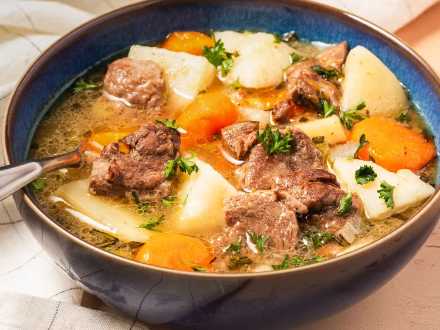

Home
Traditional Irish Stew

Description
Irish stew is more commonly made with lamb in Ireland. It's easy to prep and then let it cook slowly until the meat and vegetables are fall-apart tender and the broth is full of flavor. Every Irish household has its own recipe for this comforting dish and this is my mom's. It's perfect on a cold day or on St. Patrick's Day served with a pint of Guinness, of course!
- Prep Time: 15 mins
- Cook Time: 1 hr 45 mins
- Total Time: 2 hrs
- Servings: 6
Ingredients
- 1 tablespoon olive oil
- 2 pounds boneless lamb shoulder, cut into 1 1/2 inch pieces
- 1/2 teaspoon salt, plus more to to taste
- freshly ground black pepper to taste
- 1 large onion, sliced
- 2 carrots, peeled and cut into large chunks
- 1 parsnip, peeled and cut into large chunks (Optional)
- 4 cups water, or as needed
- 3 large potatoes, peeled and quartered
- 1 tablespoon chopped fresh rosemary (Optional)
- 1 cup coarsely chopped leeks
- 1 tablespoon chopped fresh parsley for garnish
Steps
- Gather all ingredients.
- Heat oil in a large stockpot or Dutch oven over medium heat. Add lamb pieces and cook, stirring gently, until evenly browned. Season with salt and pepper.
- Stir in onion and cook for a few minutes. Stir in water and add carrots and parsnips (if using). Cover and bring to a boil; reduce heat to low and simmer until lamb is tender, about 45 minutes to 1 hour.
- Stir in potatoes, and simmer for 15 to 20 minutes, before adding leeks and rosemary. Continue to simmer uncovered, until potatoes are tender but still whole.
- Serve piping hot in bowls garnished with fresh parsley. Enjoy!
Cook's Note
If you use a tougher cut of meat, you can leave it to simmer longer before adding the potatoes.
Parsnips and fresh rosemary are not traditional ingredients in Irish stew but my mom added them for a touch of sweetness and delicious flavor. You can add the parsnips with the potatoes if you prefer.
Nutrition Facts: (per serving)
- 381 Calories
- 10g Fat
- 37g Carbs
- 35g Protein
Source: allrecipes
Back to top